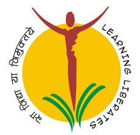

PRADNYA NIKETAN EDUCATION SOCIETY, PUNE
N. K. ORCHID COLLEGE OF ENGG. & TECH., SOLAPUR.
Approved by AICTE, New Delhi & Affiliated to DBATU Lonere, NACC Accredited


About NKOCET
With the Vision of “Locally Rooted, Globally Competent Education”, N. K. Orchid College of Engineering & Technology, Solapur (NKOCET) started from the academic year 2008-09. NKOCET is approved by AICTE, New Delhi, recognized by Government of Maharashtra with its SE, TE, BE and ME classes are affiliated to Solapur University. From this academic year 2017-18 first year of the UG course is affiliated to the newly formed state technological university of Maharashtra; Dr. Babasaheb Ambedkar Technological University, Lonere. The NKOCET has spread over picturesque, sprawling land of 10.6 acres in the vicinity of Hipparga Lake in Tale-Hipparaga, Solapur. It has emerged as a preferred knowledge destination for aspiring Engineering students. NKOCET provides excellent engineering education and creates globally competent technocrats. The trust, Pradnya Niketan Education Society, Pune has been founded by 14 highly educated eminent Technocrats, Bureaucrats and Entrepreneurs who have envisioned transformation of society through education and to serve for welfare of the people.
NKOCET has added many feathers in its cap through its journey. In recognition of its academic excellence, the institute was conferred 36th rank in “Top 50 Private Engineering Colleges in India” in 2012 by Bhaskar-Lakshya Magazine. The institute is making its presence throughout the country by being in the list of top 250 colleges of India consistently in 2014 and 2015 by Digital Learning Magazine.
NKOCET is known for its strong teaching-learning process where lot of precedence is given on practical and real knowledge acquisition. The Institute has been a leader in academics with effective teaching-learning pedagogy which has produced many University Rankers. The institute is renowned for its academic excellence as every year almost 50 percent university rankers are from NKOCET. The institute has not only made its mark in the affiliated university through excellent academic results but also left its footprints in the top-notch MNCs by placing Competent Engineers.
Considering varied backgrounds and different learning abilities, lot of emphasis is given on strengthening theoretical as well as practical knowledge by providing student-centric teaching learning pedagogies. With the effective use of ICT, the teaching learning process has been transformed, wherein students are made to learn through NPTEL MOOCs courses, spoken tutorials, video recorded faculty lectures, animations, simulation software. Along with these practices, focused industrial training, sponsored projects develop their engineering skills leading towards Industry-Ready Engineers. While finalizing projects emphasis is given to applied projects based on industry problems.
The institute is well equipped with the state-of-the-art infrastructure, laboratories, smart classrooms, workshop to meet today’s global needs. The well-organized Library consist leading National and International periodicals and Research Journals along with a huge collection of books which is accessible 24x7 for the students. NKOCET has highly qualified and experienced faculty members who are committed to create a congenial student friendly environment.
The Institute encourages students not only for placements in MNCs but also for higher education abroad and in renowned educational institutes through GATE. NKOCET conducts special classes during vacations for students who prepare for GATE examination. The focused and systematic training has brought exceptional results as many students have been qualified GATE exam till date. Also, to encourage students to pursue higher education abroad the Institute’s Study Abroad Cell (SAC) guides and arranges trainings. It’s been a remarkable achievement for the institute from Tier II city like Solapur as twenty six students have cleared exams like GRE, TOFEL and IELTS. Through SAC, twenty five students have got admitted in renowned Universities of the world. NKOCET has become a destination through which they can get admitted in the best of the Universities in India and abroad.
NKOCET has been a major source for renowned industries through which quality Engineers are recruited through the Training & Placement Cell of the institute. The Institute has a strong Industry-Institute connect which gives prominence to bridge the gap between industry and the Institute. To establish strong industry-connect, the institute has signed MoUs with industries for training the students on advanced technologies and mentoring for final year projects. To enhance technical skills every department organizes add-on co-curricular courses to enhance placement opportunities of the students. The institute also encourages the student’s innovation and creativity by arranging technical competitions and national level events like Orchitech every year.
Along with Technical skills, the institute provides Soft Skills training to sustain in the challenging and competitive professional world. The Institute has initiated a novel concept of Soft Skills for future engineers for their personal and professional advancements. The Soft Skills Training conducted by NKOCET focuses on elements of Training & Development that require changes in Communication, behavior, adaptability & Critical thinking. The Soft Skills module provided to the students have instilled the employability skills, Communication Skills, language skills, presentation skills and overall development of the students. Every class goes through two hours of rigorous Soft Skills training wherein specialized full time Trainers are appointed to prepare the students for their future challenges. It has brought significant change in students’ attitude and resulted into increased placement of the Institute.
Industrial training helps the students to visualize theoretical concepts. By considering the importance of Industrial training in students’ learning, the Institute organizes well planned industrial training. Students from third Year undertake Implant training in various industries identified by the faculty members in advance and students are introduced to the said industries. Faculty members visit the industry where the training of the students is scheduled. The institute also takes efforts for social development under “Institute Social Responsibility” (ISR).
The institute is striving its level best to produce first day ready Engineer’s not only by giving applied knowledge but also enhancing employability quotient of students by improving their technical skills through add-on courses, industry oriented project and through a well structured soft skill development.
About PNES
The Pradnya Niketan Education Society, Pune has been founded by 14 highly educated eminent personalities, who are Technocrats, Bureaucrats and Entrepreneurs. All of them have varied experience in various fields , basically, they came together and founded this trust, with broad vision to transform the society through education and to serve for welfare of the people.
Along with The N K Orchid College Of Engineering & Technology Solapur,The Pradnya Niketan Education Society also runs English medium School namely, "The Orchid School" at Baner, Pune since 2005. Recently IMRB International & Education World (21 August 07) jointly conducted a survey & listed "INDIA'S MOST RESPECTED SCHOOLS". In the list "The Orchid School, Pune" stands 63rd in the country.
VISION
Locally Rooted, Globally Competent
MISSION
To strive for excellence in our teaching-learning process, encouraging creativity and critical thinking.
Strengthening Industry-Institute interaction.
Providing holistic education for the student’s personality development.
To imbibe universal values of respect,commitment and team spirit.
Providing Employable Education.
Promoting research and consultancy.
Principal's Desk
NKOCET has been at the vanguard of academics since 2008. Our vision is to provide ‘Locally Rooted, Globally Competent Education.’ With this vision in our mind we all work in harmony to take the college to zenith of its glory. So far our college has not only excelled in academics but has also proved its mettle in developing and shaping the overall personality of our students through varied activities. Our students have far outdone in academic results by bagging university merit positions in different subjects. We have turned out to be a model constituent college in the academic sphere of Western Maharashtra. We are committed to focus on the needs of each individual student and aim to nurture each student and ensure their journey at NKOCET is a successful and life-enhancing experience.
We believe in student centric Teaching-Learning Pedagogy for imbibing excellence in the domains of engineering. A uniquely designed academic system works in harmony in order to meet the challenges of maintaining strong base in scholastics.
To corroborate the learnings at the college our Faculty members undertake industrial training during vacations and constantly upgrade their qualifications through research work. Simultaneously, students take up a well planned industrial training as a part of the curriculum.
A great substance is added to the student’s profile through their Project work. At NKOCET, we encourage them to take projects that give experiential learning with lots of creativity and innovation to make them true engineers and not merely engineering graduates.
We provide our students with opportunities for a well-rounded educational experience by training them in different industry oriented courses. The Cocurricular courses at NKOCET focus on allowing students to develop a range of important technical skills to excel in their future career and make them Industry Ready Engineer.
Additionally, the Soft Skills Training develops in them the ability to adapt to changing circumstances and the willingness to learn. The transition from student life to being a Professional is eased by preparing them to enter the industry with Confidence and Passion.
NKOCET addresses industry-institute interaction through regular associations, symposiums, guest lectures, visits, workshops etc. This enables our students to pick up skills besides what is imparted in the classrooms.
To sum up, we aim at making our students first day productive engineer for the industry by incorporating and inculcating the essence of employable skills in them. Hence, I urge and welcome the Industry to Orchid Campus and undertake Placements with us for youthful workforce that is full of zeal and talent.
Email :
office@orchidengg.ac.in
Departments
Important Links
Contact Us
Contact Info
Pradnya Niketan Education Society Pune's
N K Orchid College Of Engineering & Technology, Solapur
Phone :
094230 84363
Mail :
office@orchidengg.ac.in
Address :
Gat No.16,Solapur-Tuljapur Road, Near Mashroom Ganapati Temple,
Tale-Hipparaga, Solapur-413002